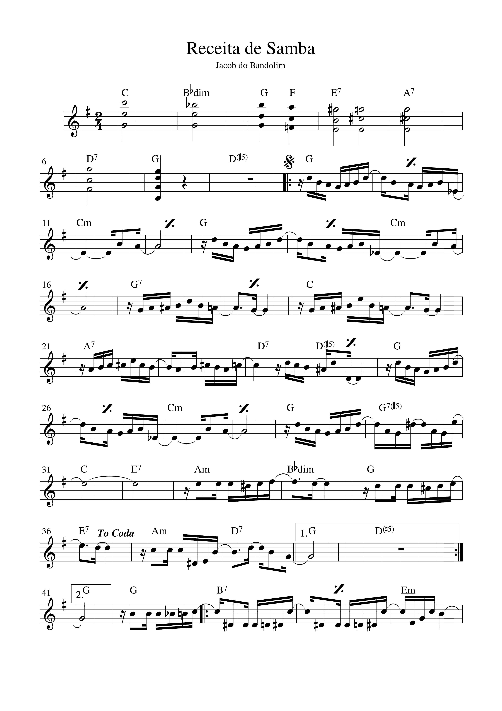
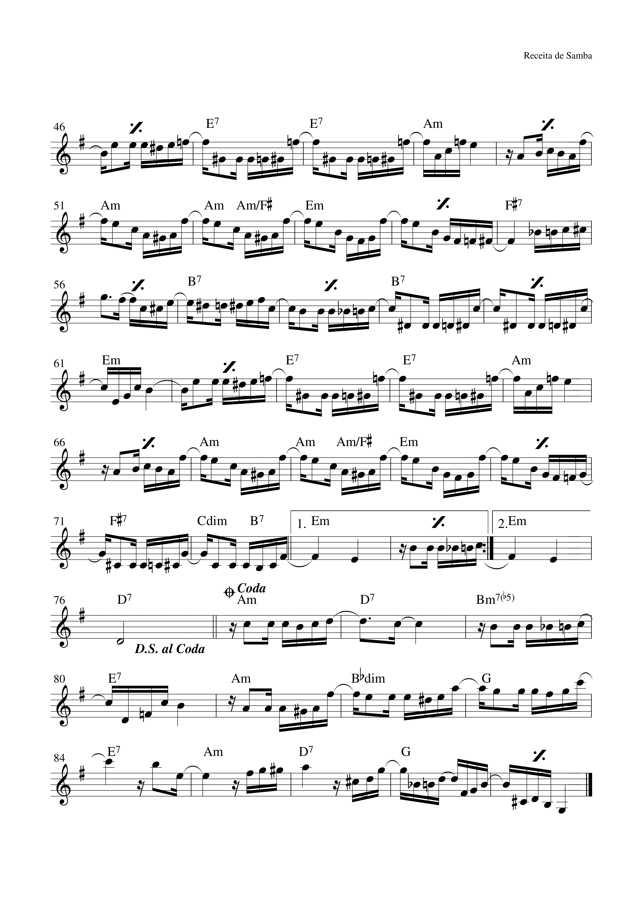

Brano
Come studiare questa pagina
Questa pagina usa la partitura completa in facsimile, senza semplificazioni ritmiche: ogni elemento grafico rimane quello originale (note, pause, legature, arcate e segni di ripetizione).
Per lo studio pratico: procedi per blocchi da 4 misure, poi collega i blocchi seguendo i richiami (D.S. al Coda e To Coda).
1
Receita de Samba
Jacob do Bandolim - Choro/Samba
Receita de Samba
Jacob do Bandolim
Trascrizione mantenuta in forma completa dal chart originale: non e stata ridotta come esercizio base, cosi puoi lavorare con la sintassi musicale reale del brano.
Pagina 1 Misure 1-45

Tema principale, ripetizioni e primo passaggio verso la seconda parte.
Pagina 2 Misure 46-84 + Coda

Sviluppo finale, D.S. al Coda e chiusura del brano.
Nota: questa versione e volutamente fedele all'originale, quindi mantiene legature, pause e richiami senza semplificazioni intermedie.